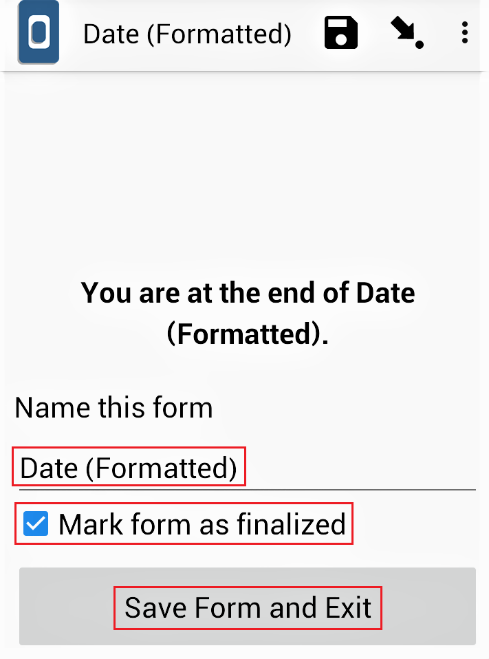
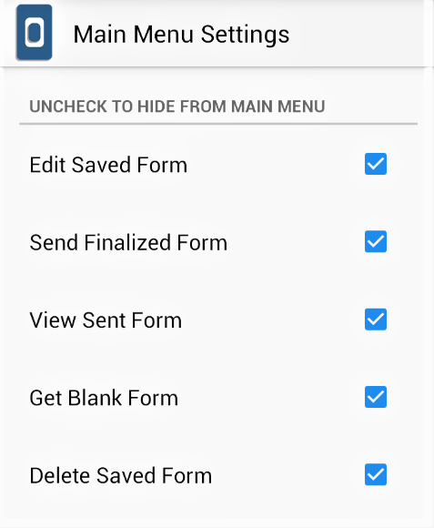

What do you need help with?
Search the knowledge base, browse our resources and visit our forum for more detail information
Search the knowledge base, browse our resources and visit our forum for more detail information
Data for KoBoToolbox can be collected using two different approaches, viz. collecting data through web forms (Enketo) and collecting data through KoBoCollect. This article describes collecting data with KoBoCollect Android App.
Any modern Android device should support KoBoCollect. It is free, and the latest version of the app can be installed directly through Google Play Store. Alternatively, an appropriate version can be installed compatible with the device’s operating system through our [GitHub repository] (https://github.com/kobotoolbox/collect/releases). We, however, strongly recommend users install the latest version of the app as it should be bugs-free and should also support the latest features compatible with KoBoToolbox.
After installing the app on the device, users will need to configure it with the user’s KoBoToolbox account.
Open KoBoCollect.
Open General Settings (this may be at the top right of your screen, the bottom right, or at the button in the center, depending on your Android version). Then select Server.

Users are now able to configure the URL, Username, and Password from the Server Settings. Under URL, enter the server https://kc.kobotoolbox.org or https://kc.humanitarianresponse.info (depending upon the used server). Under the Username, enter account username and under the Password, enter account password.
 Note: A device may sometimes have trouble connecting to the server if the device date and time are incorrect. To learn more about troubleshooting, please feel free to go through our support article Troubleshooting KoBoCollect Android Application.
Note: A device may sometimes have trouble connecting to the server if the device date and time are incorrect. To learn more about troubleshooting, please feel free to go through our support article Troubleshooting KoBoCollect Android Application.
Follow the steps mentioned below to get blank survey forms to the app.
Make sure that users have successfully deployed at least one project through the user’s KoBoToolbox account.
Make sure that users have set up the URL as mentioned above.
Make sure that the device is connected to the internet securely.
Select Get Blank Form from the home menu.

A list of all the deployed survey forms should appear. Press Select All to have all the survey forms to the app or select the ones manually and then press Select All. Then press Get Selected.

Once the blank forms are in the app, users no longer require an internet connection to collect data. The blank forms and the filled-up forms should stay on the device until they are deleted or submitted to the server.
Follow the steps mentioned below to start collecting data using the app.
Press Fill Blank Form from the home menu.
Select the survey form to start collecting data.
Go through all the questions (swiping your finger from right to left).
At the end of the survey, press Save Form and Exit. Make sure the form is marked as ‘finalized’. If this is unchecked and still press Save Form and Exit, the filled-up form goes to Edit Saved Form while it does not go to Send Finalized Form. In such a scenario, go back to Edit Saved Form, open the form and then press Go To End and press Save Form and Exit, making sure the form is marked as ‘finalized’. Generally, when finished collecting data and when the form is marked as ‘finalized’ and pressed Save Form and Exit, the saved form simultaneously goes to Edit Saved Form and Send Finalized Form.  Users could also change the name of the saved form to the desired name under Name this form if they think data collection has not been completed and requires another visit with the respondent. Changing the completed form’s name would make the enumerator easy to spot which form to edit from the Edit Saved Form.
Once users have completed collecting data by pressing Save Form and Exit, the saved form automatically goes to Edit Saved Form. If users need to edit this saved form, follow the steps outlined below.
Press Edit Saved Form from the home menu.
Users should see a list of Saved Forms. Choose the one that needs correction.
Make changes as needed, and then press Save Form and Exit.
Repeat the process multiple times if more corrections are required.
Users should now need an internet connection at this phase to upload their finalized forms to the server. Follow the steps mentioned below to upload the collected data to the KoBoToolbox server (your KoBoToolbox account).
Ensure the device with the completed forms is securely connected to the internet.
From the home screen, press on Send Finalized Form.
A list of all the collected forms should appear.
Press Select All (or select the ones you wish to upload) and then press Send Selected.
To ensure the forms were uploaded successfully, press View Sent Form. Users should be able to view all the submitted forms.
Once all the filled-up forms are submitted, users could delete Saved Forms and Blank Forms from the app to not mix up with other ongoing projects or future projects. Follow the steps outlined to delete these forms from the app.
From the home screen, press on Delete Saved Form.
Users should now see two tabs. The default is Saved Forms. These are the forms that were filled-up while collecting data. Press Select All to delete all the Saved Forms from the app and then press Delete Selected.

The next tab is the Blank Forms. These are the blank questionnaire or, in other words, the questionnaire to the survey project that a user deployed through their KoBoToolbox account. Press Select All to delete all the Blank Forms from the app and then press Delete Selected.
When a user submits all the filled-up forms to the server by pressing Send Finalized Form, the user should be able to confirm that the submitted forms have reached the server if they see them in the View Sent Form (i.e., once you submit them, they are also seen in the View Sent Form). Data managers generally advise users to keep this information until the end of the project as it always provides the user with reference on the total number of collections and submissions.
However, once the project’s data collection is over, it is advised to reset View Sent Form from the app as it may create confusion with the total number of completed cases sent to the server. Hence, to avoid this confusion, please follow the steps to reset View Sent Form from the app as follows:
Open the Admin Settings (this may be on the top right, the bottom right, or in the bottom center of your screen, depending on your Android version).

Select Reset application.
Check on Saved forms (instances folder, instances database) and then press RESET. Users should further see a small dialogue box pop up Reset results Saved forms::Success. Then press OK.
It is sometimes necessary to hide some buttons so that enumerators do not manipulate the collected data or play around, which increases the risk of data loss. Hence, to avoid this pitfall follow the instructions outlined below.
Open the Admin Settings (this may be on the top right, the bottom right, or in the bottom center of your screen, depending on your Android version).
At the bottom, users should see the User Access Control, which includes Main Menu Settings, User Settings, and Form Entry Settings.
Select Main Menu Settings to hide the button from the main menu. 
Select User Settings to hide the button from the user settings menu.

Select Form Entry Settings to hide the button from the form menu.

After making changes, do not forget to set an Admin Password so that enumerators would not access the Admin Settings.

KoBoCollect is a fork of the excellent ODK Collect. As of today, there are no substantive differences between the two apps. Users are free to use either one for their data collection. KoBoToolbox’s online features are fully compatible with both apps. So technically, there should be no advantage of one over the other.
We, however, do not recommend having both apps installed concurrently. Installing both apps on the same device could lead to some confusion depending on the Android settings.
Historically there used to be some significant differences between the two. Back in 2009, KoBoToolbox made several significant changes to ODK Collect that became KoBoCollect. That included cascading questions, hiding delete and edit buttons for field data collection, and other changes. That was in part because XLSForm was not yet an option, and KoBoToolbox built a form builder for all question types and advanced settings, including cascading questions, which were saved directly as an XML file for the mobile app. These changes were eventually added to ODK Collect over the years, along with many other great features. So, in 2014, KoBoToolbox decided to re-fork KoBoCollect off ODK Collect, keeping only minimal changes. Today these include the KoBoToolbox server in the configuration dropdown, a reference back to ODK Collect, and the KoBoToolbox logo and name.
KoBoToolbox updates KoBoCollect periodically. Interested users could find the source code here. There are tens of thousands of KoBoCollect users worldwide; hence, KoBoToolbox has not planned to discontinue KoBoCollect at this point. Nevertheless, if a user is starting a new project, one could very well start with ODK Collect. One advantage in starting with ODK Collect is that the app is updated more frequently than KoBoCollect hence receiving bug fixes more quickly.